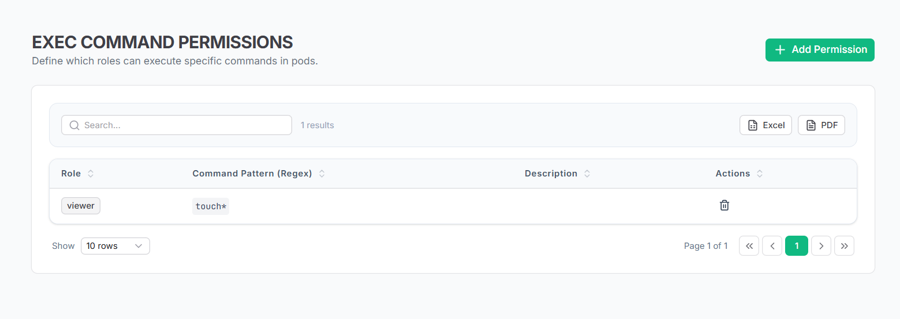
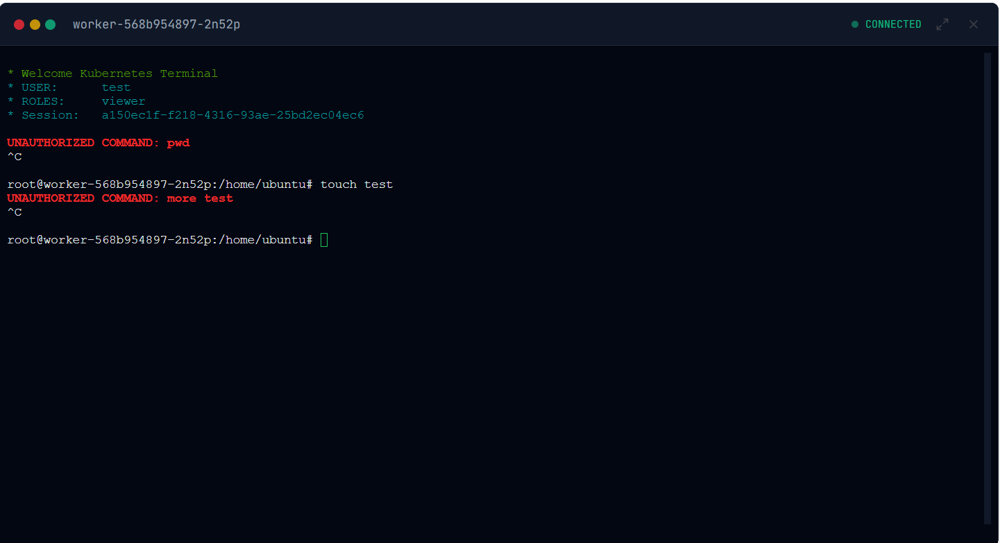

Platform Installation
Platform Kurulumu
Poyraz-K8s is a comprehensive Kubernetes security and observability platform with three main deployment categories. Each serves a distinct purpose in your cloud-native security strategy.
Poyraz-K8s, bulut-native güvenlik stratejinizde farklı amaçlara hizmet eden üç ana dağıtım kategorisi bulunan kapsamlı bir Kubernetes güvenlik ve gözlemlenebilirlik platformudur.
Management Platform Installation
Yönetim Platformu Kurulumu
The central management platform provides cluster orchestration, policy management, vulnerability scanning, and a unified dashboard. This is the core component that should be installed first.
Merkezi yönetim platformu, küme orkestrayonu, politika yönetimi, zafiyet taraması ve birleşik bir kontrol paneli sağlar. İlk kurulması gereken temel bileşendir.
Docker Compose Deployment
Docker Compose Dağıtımı
version: "3.8"
services:
# PostgreSQL Database
postgres:
image: postgres:15-alpine
container_name: postgres
environment:
- POSTGRES_DB=k8s_platform
- POSTGRES_USER=k8s_user
- POSTGRES_PASSWORD=admin123postgres
volumes:
- ./postgres_data:/var/lib/postgresql/data
networks:
- app-network
# Platform Backend
platform-backend:
image: poyraz-k8s-backend:latest
container_name: backend
ports:
- "8686:8686"
environment:
- SPRING_PROFILES_ACTIVE=prod
- POSTGRES_USER=k8s_user
- POSTGRES_PASSWORD=admin123postgres
- POSTGRES_DB=k8s_platform
depends_on:
- postgres
networks:
- app-network
# Platform Frontend
platform-frontend:
image: poyraz-k8s-frontend:latest
container_name: frontend
ports:
- "8787:8787"
depends_on:
- platform-backend
networks:
- app-network
networks:
app-network:
driver: bridgeEnvironment Configuration
Ortam Yapılandırması
| Variable | Değişken | Description | Açıklama | Default | Varsayılan |
|---|---|---|---|---|---|
POSTGRES_DB |
PostgreSQL database namePostgreSQL veritabanı adı | k8s_platform |
|||
POSTGRES_USER |
PostgreSQL usernamePostgreSQL kullanıcı adı | k8s_user |
|||
POSTGRES_PASSWORD |
PostgreSQL passwordPostgreSQL şifresi | admin123postgres |
|||
SERVER_PORT |
Backend server portBackend sunucu portu | 8686 |
|||
SUPERADMIN_PASSWORD |
Initial admin dashboard passwordBaşlangıç admin paneli şifresi | admin123 |
Vulnerability Scanner Settings
Zafiyet Tarayıcısı Ayarları
| Variable | Değişken | Description | Açıklama | Default | Varsayılan |
|---|---|---|---|---|---|
VULN_SCAN_PATH |
Trivy scanner binary pathTrivy tarayıcı binary yolu | trivy |
|||
VULN_SCAN_CACHE |
Trivy cache directoryTrivy önbellek klasörü | /app/trivy-cache |
|||
VULN_SCAN_CRON |
Scan schedule (cron format)Tarama zamanlaması (cron formatı) | 0 * * * * * |
|||
VULN_SCAN_OFFLINE |
Enable offline scanningÇevrimdışı taramayı etkinleştir | true |
|||
VULN_SCAN_DB_REPO |
Vulnerability database repositoryZafiyet veritabanı deposu | ghcr.io/aquasecurity/trivy-db |
Cluster Monitoring Settings
Küme İzleme Ayarları
| Variable | Değişken | Description | Açıklama | Default | Varsayılan |
|---|---|---|---|---|---|
CLUSTER_EYE_SCAN_INTERVAL_MS |
Cluster health scan intervalKüme sağlık tarama aralığı | 300000 |
|||
POD_METRICS_COLLECT_INTERVAL_MS |
Pod metrics collection intervalPod metrik toplama aralığı | 30000 |
|||
POD_METRICS_RETENTION_DAYS |
Pod metrics retention periodPod metrik saklama süresi | 7 |
|||
BACKUP_BASE_PATH |
Backup storage directoryYedek depolama klasörü | /app/data/k8s-backup |
Quick Start Command
Hızlı Başlangıç Komutu
Deploy the management platform with default settings:
Varsayılan ayarlarla yönetim platformunu dağıtın:
cd deploy/compose && docker-compose up -d
Access the platform at http://localhost:8787 (Frontend) and http://localhost:8686 (Backend API)
Platforma http://localhost:8787 (Frontend) ve http://localhost:8686 (Backend API) üzerinden erişin
Network Observability Agent
Ağ Gözlemlenebilirlik Ajanı
Deploy eBPF-powered network flow monitoring agents to capture real-time TCP/UDP traffic patterns without performance overhead. These agents hook directly into kernel networking functions.
Performans yükü olmadan gerçek zamanlı TCP/UDP trafik desenlerini yakalamak için eBPF destekli ağ akış izleme ajanları dağıtın. Bu ajanlar doğrudan çekirdek ağ işlevlerine bağlanır.
Agent Deployment
Ajan Dağıtımı
| Component | Bileşen | Binary | Binary | Kernel Requirement | Çekirdek Gereksinimi |
|---|---|---|---|---|---|
| HTTP Flow Tracer | http_tracer_5.4 / http_tracer_5.8 |
Linux 4.15+ (eBPF enabled)Linux 4.15+ (eBPF aktif) |
Environment Configuration
Ortam Yapılandırması
| Variable | Değişken | Description | Açıklama | Default | Varsayılan |
|---|---|---|---|---|---|
NETWORK_FLOW_RETENTION |
Flow data retention in daysAkış verisi saklama süresi (gün) | 15 |
|||
NETWORK_FLOW_PURGE_CRON |
Data cleanup scheduleVeri temizleme zamanlaması | 0 */15 * * * * |
|||
NETWORK_FLOW_PURGE_BATCH_SIZE |
Cleanup batch sizeTemizleme parti boyutu | 5000 |
|||
POLICY_LABELS |
Labels for network policy detectionAğ politikası tespiti için etiketler | app,uygulama,deploy,project |
DaemonSet Configuration
DaemonSet Yapılandırması
apiVersion: apps/v1
kind: DaemonSet
metadata:
name: http-tracer
namespace: poyraz-system
spec:
selector:
matchLabels:
app: http-tracer
template:
metadata:
labels:
app: http-tracer
spec:
hostNetwork: true
hostPID: true
containers:
- name: http-tracer
image: poyraz-k8s/http-tracer:latest
securityContext:
privileged: true
volumeMounts:
- name: proc
mountPath: /host/proc
readOnly: true
- name: sys
mountPath: /host/sys
readOnly: true
env:
- name: BACKEND_URL
value: "http://poyraz-backend:8686"
- name: NODE_NAME
valueFrom:
fieldRef:
fieldPath: spec.nodeName
volumes:
- name: proc
hostPath:
path: /proc
- name: sys
hostPath:
path: /sysDeployment Command
Dağıtım Komutu
Deploy network observability agents on every node:
Her düğüme ağ gözlemlenebilirlik ajanları dağıtın:
kubectl apply -f k8s/http-tracer-daemonset.yaml
Note: Requires privileged access and eBPF-enabled kernel (Linux 4.15+)
Not: Ayrıcalıklı erişim ve eBPF destekli çekirdek gerektirir (Linux 4.15+)
Flow Data Structure
Akış Veri Yapısı
| Field | Alan | Description | Açıklama | Type | Tip |
|---|---|---|---|---|---|
source_ip |
Source IP addressKaynak IP adresi | string |
|||
dest_ip |
Destination IP addressHedef IP adresi | string |
|||
source_port |
Source portKaynak portu | int |
|||
dest_port |
Destination portHedef portu | int |
|||
protocol |
Network protocolAğ protokolü | string |
|||
bytes_sent |
Bytes transmittedAktarılan baytlar | long |
|||
pod_name |
Source pod nameKaynak pod adı | string |
|||
namespace |
Pod namespacePod namespace | string |
Runtime Security Agent
Çalışma Zamanı Güvenlik Ajanı
Deploy advanced eBPF-based runtime security monitoring that tracks system calls, file operations, and process executions in real-time to detect and prevent malicious activities.
Kötü niyetli faaliyetleri tespit etmek ve önlemek için sistem çağrılarını, dosya işlemlerini ve süreç yürütmelerini gerçek zamanlı olarak izleyen gelişmiş eBPF tabanlı çalışma zamanı güvenlik izlemesi dağıtın.
Agent Architecture
Ajan Mimarisi
| Component | Bileşen | Function | İşlev | Kernel Requirement | Çekirdek Gereksinimi |
|---|---|---|---|---|---|
| runtime-guard | System call monitoring & exec blockingSistem çağrısı izleme & exec engelleme | Linux 5.8+ (BPF RingBuf)Linux 5.8+ (BPF RingBuf) |
Environment Configuration
Ortam Yapılandırması
| Variable | Değişken | Description | Açıklama | Default | Varsayılan |
|---|---|---|---|---|---|
EBPF__MAX_ARGS |
Maximum command arguments to captureYakalanacak maksimum komut argümanı | 10 |
|||
EBPF__ARG_SIZE |
Maximum size per argumentArgüman başına maksimum boyut | 64 |
|||
EBPF__BUFFER_PAGES |
eBPF ring buffer pageseBPF halka tamponu sayfaları | 64 |
|||
SECURITY__EXCLUDED_NAMESPACES |
Namespaces to exclude from monitoringİzlemeden hariç tutulacak namespace'ler | kube-system,kube-public |
|||
SECURITY__SANITIZE_INPUTS |
Enable input sanitizationGirdi temizlemesini etkinleştir | true |
|||
BACKEND__BASE_URL |
Backend API endpoint for rulesKurallar için backend API uç noktası | http://poyraz-backend:8686 |
Exec-Allow Security Rules
Exec-Allow Güvenlik Kuralları
The runtime security agent enforces role-based command execution policies. Users can only execute commands that match their assigned RegEx whitelist patterns.
Çalışma zamanı güvenlik ajanı, rol tabanlı komut yürütme politikalarını uygular. Kullanıcılar yalnızca atanan RegEx beyaz liste desenlerine uyan komutları yürütebilir.


Security Event Types
Güvenlik Olay Türleri
| Event Type | Olay Türü | System Call | Sistem Çağrısı | Description | Açıklama |
|---|---|---|---|---|---|
| EXEC_BLOCKED | execve |
Command execution blocked by policyKomut yürütme politika tarafından engellendi | |||
| EXEC_ALLOWED | execve |
Command execution permittedKomut yürütmesine izin verildi | |||
| FILE_ACCESS | openat |
File system access attemptDosya sistemi erişim denemesi | |||
| PROCESS_SPAWN | clone |
New process creationYeni süreç oluşturma | |||
| PTRACE_ATTEMPT | ptrace |
Process debugging attemptSüreç hata ayıklama denemesi |
DaemonSet Deployment
DaemonSet Dağıtımı
apiVersion: apps/v1
kind: DaemonSet
metadata:
name: runtime-security
namespace: poyraz-system
spec:
selector:
matchLabels:
app: runtime-security
template:
metadata:
labels:
app: runtime-security
spec:
hostNetwork: true
hostPID: true
containers:
- name: runtime-security
image: poyraz-k8s/runtime-security:latest
securityContext:
privileged: true
capabilities:
add:
- SYS_ADMIN
- SYS_RESOURCE
- SYS_PTRACE
volumeMounts:
- name: proc
mountPath: /host/proc
readOnly: true
- name: sys
mountPath: /host/sys
readOnly: true
- name: debugfs
mountPath: /sys/kernel/debug
env:
- name: BACKEND__BASE_URL
value: "http://poyraz-backend:8686"
- name: KUBERNETES__IN_CLUSTER
value: "true"
- name: CLUSTER_ID
value: "production-cluster"
volumes:
- name: proc
hostPath:
path: /proc
- name: sys
hostPath:
path: /sys
- name: debugfs
hostPath:
path: /sys/kernel/debugDeployment Command
Dağıtım Komutu
Deploy runtime security agents with advanced monitoring:
Gelişmiş izleme ile çalışma zamanı güvenlik ajanları dağıtın:
kubectl apply -f k8s/runtime-security-daemonset.yaml
Warning: Requires privileged containers with SYS_ADMIN capabilities and debugfs access
Uyarı: SYS_ADMIN yetenekleri ve debugfs erişimi olan ayrıcalıklı konteynerler gerektirir